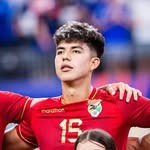
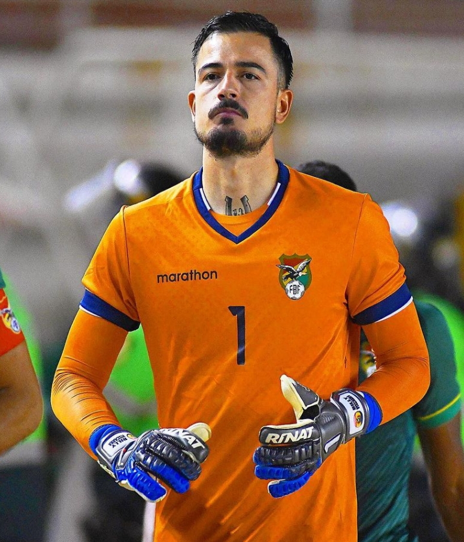
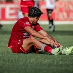
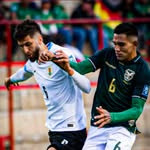
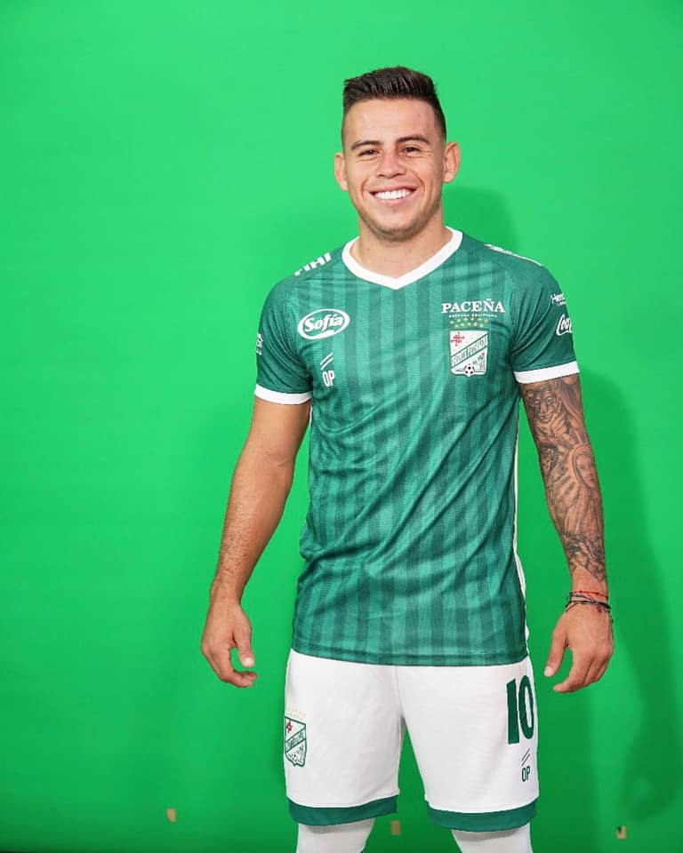
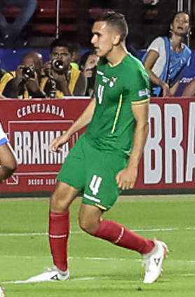
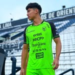
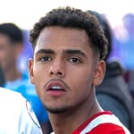
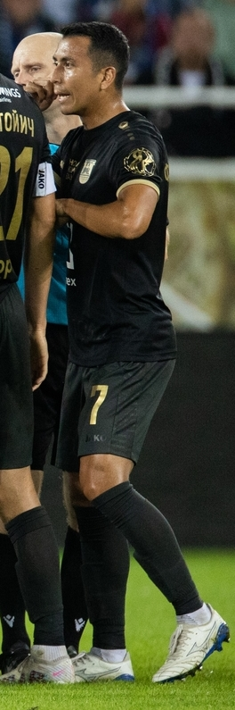

| Diego Medina |
Defensa central |
23 |
Defensor rápido y técnico, con experiencia en clubes bolivianos y selecciones juveniles. Promesa del fútbol boliviano. |
 |
| Enzo Monteiro |
Extremo izquierdo |
21 |
Joven habilidoso y veloz, capaz de desequilibrar en ataque. Destacado en divisiones juveniles y fútbol profesional boliviano. |
|
| Gabriel Villamíl |
Centrocampista |
24 |
Medio creativo y versátil, bueno en defensa y generación de jugadas. Figura en clubes bolivianos y promesa nacional. |
 |
| Guillermo Viscarra |
Arquero |
32 |
Portero ágil y seguro, con experiencia en clubes bolivianos y selección nacional. Organiza la defensa con liderazgo. |
 |
| Gustavo Peredo |
Extremo derecho |
25 |
Delantero veloz y técnico, titular en Guabirá y en la selección. Figura destacada en competencias nacionales e internacionales. |
 |
| Héctor Cuéllar |
Mediocentro ofensivo |
27 |
Medio creativo de Always Ready, aporta goles y asistencias. Convocado regularmente a la selección nacional. |
 |
| Henry Vaca |
Extremo izquierdo |
27 |
Mediocampista ofensivo versátil de Independiente Petrolero, destaca por técnica y generación de juego en la selección. |
 |
| Luis Paz |
Lateral derecho |
28 |
Mediocampista resistente y confiable en The Strongest. Aporta equilibrio y solidez en selección y clubes. |
 |
| Marcelo Martins |
Delantero centro |
38 |
Máximo goleador histórico de Bolivia, con experiencia internacional y liderazgo en club y selección. |
 |
| Miguelito |
Media punta |
21 |
Joven mediocampista ofensivo, creativo y goleador. Destacado en América MG y en la selección boliviana. |
 |
| Moisés Paniagua |
Mediocentro |
18 |
Joven talento rápido y habilidoso, promesa del fútbol boliviano en clubes y selección. |
 |
| Roberto Fernández |
Arquero |
26 |
Portero experimentado y líder, clave en la selección y clubes bolivianos. Seguro y confiable bajo los tres palos. |
 |